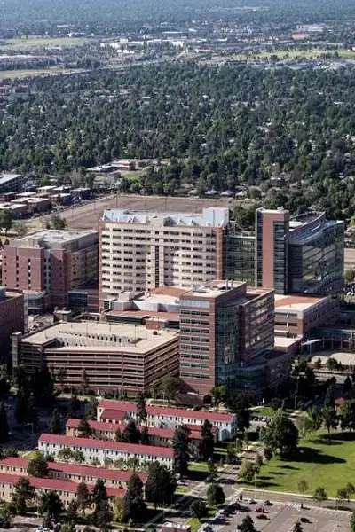
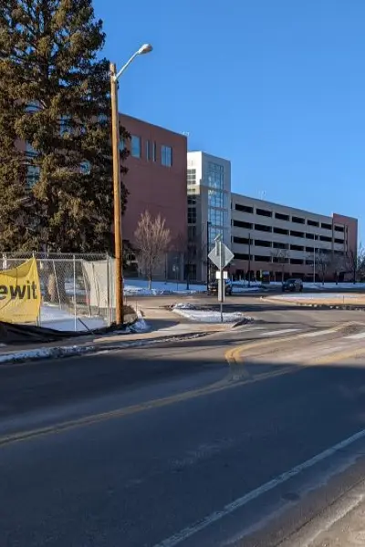
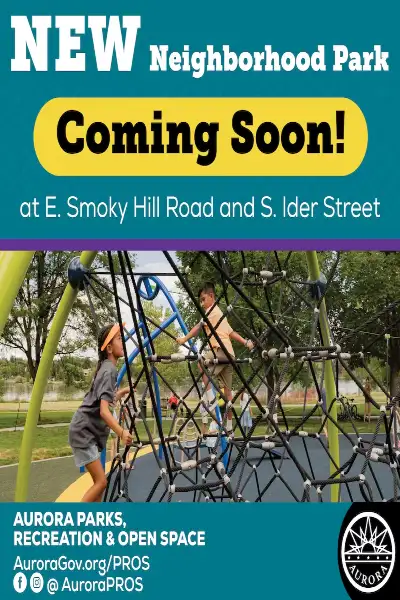
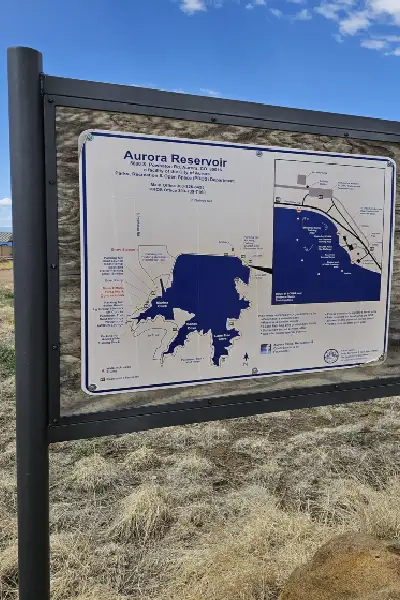
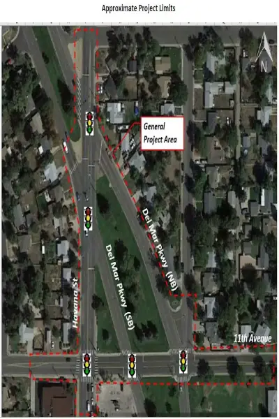
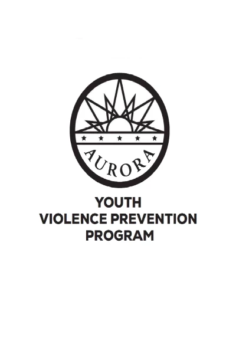

Alberto Gomez Arias
Home
Chamber
Site Plan
Form
Dark Mode 🌑

Anschutz Medical Campus

Road Repairs Aurora Medical Campus

New Park Planned

Aurora Reservoir

Road Safety Improvements

Aurora's Youth Violence Prevention Program